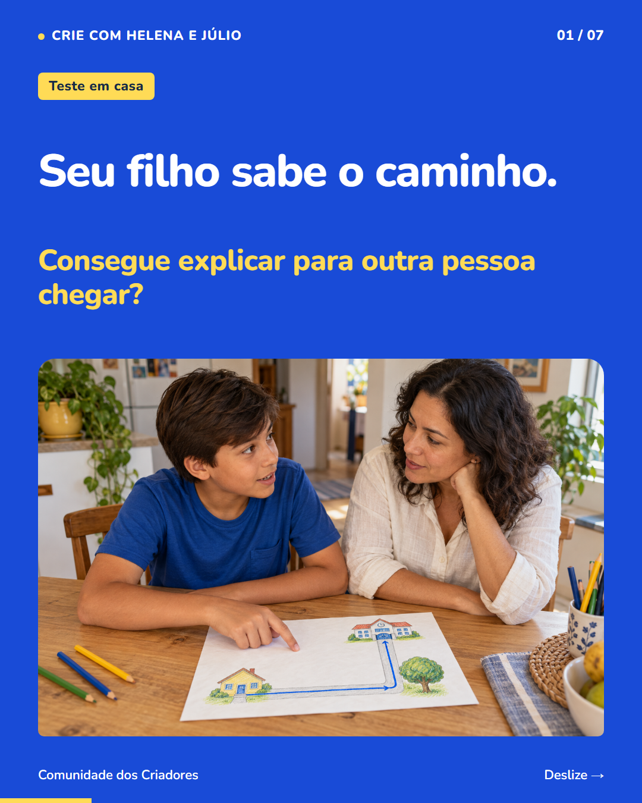
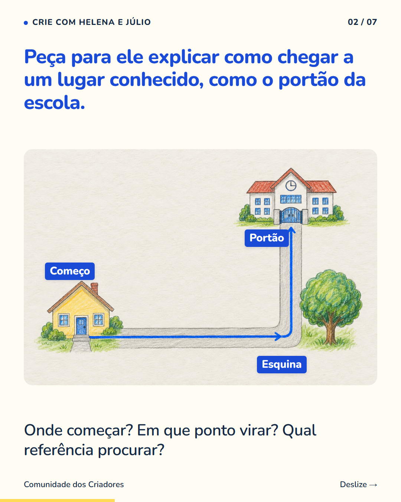
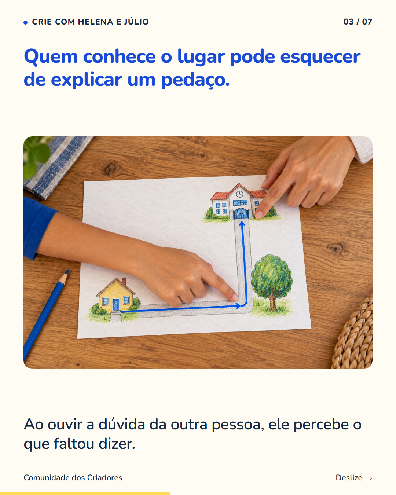
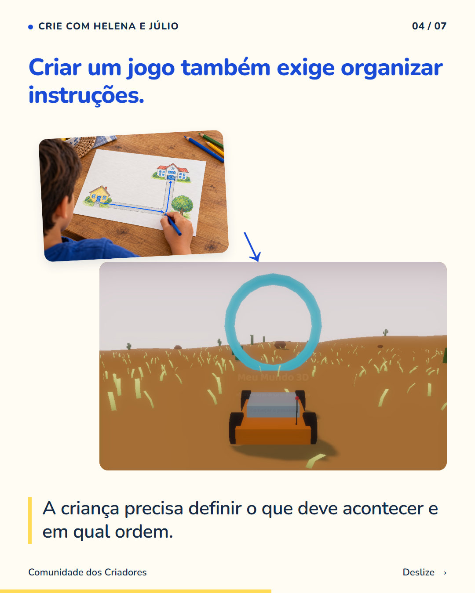
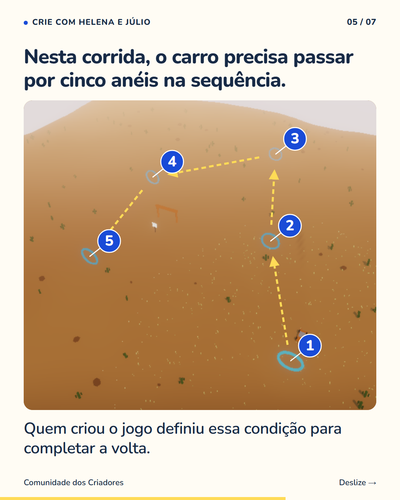
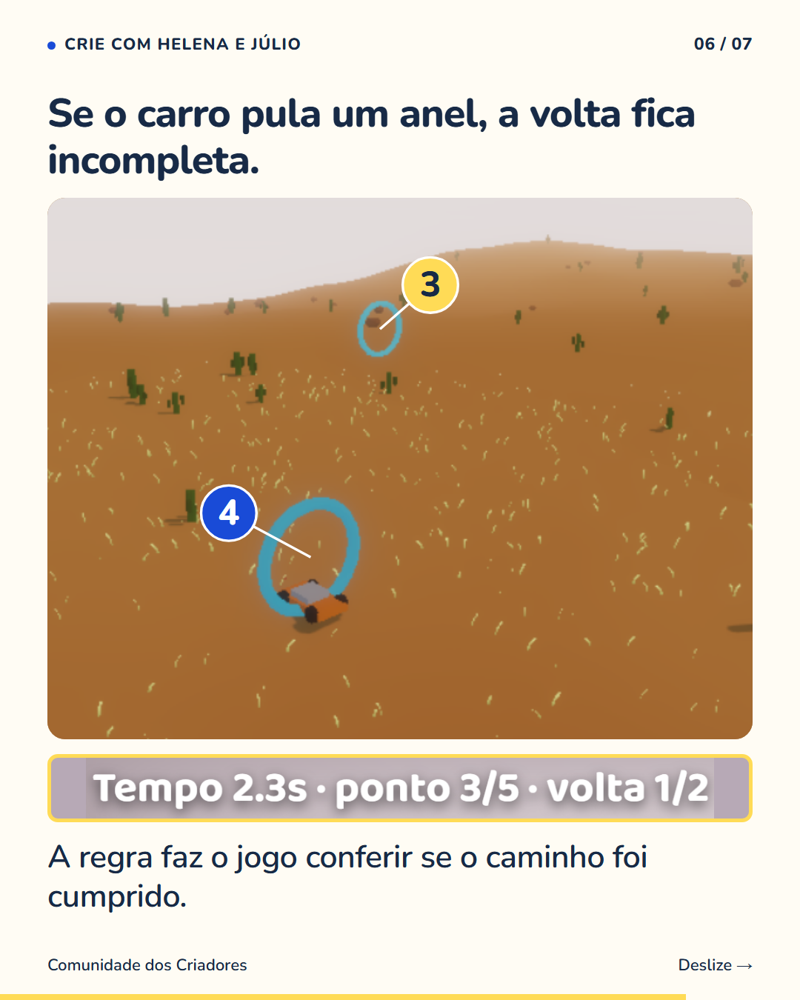
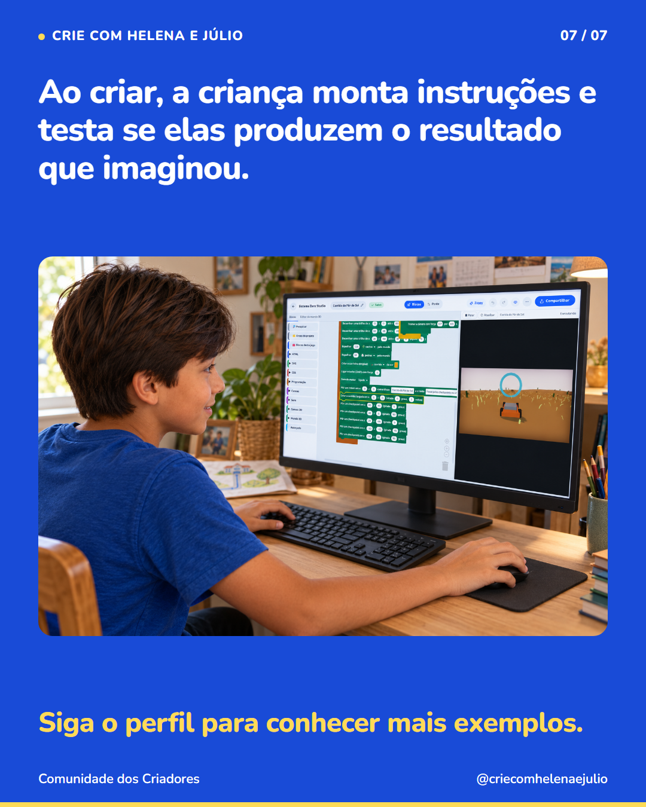

7 slides · 1080 × 1350 · Copy revisada · Do caminho às instruções







Explicar um caminho conhecido faz aparecer detalhes que a gente costuma deixar de fora. Seu filho pode dizer ‘vira ali’, mas quem está ouvindo precisa saber onde é ‘ali’. Ao responder, ele tem a oportunidade de organizar a explicação e acrescentar a informação que faltou. Na criação de jogos, as instruções também precisam definir o que acontece. Na corrida do carrossel, a volta só termina depois que o carro passa pelos cinco anéis na ordem. Quem cria monta essa regra e testa caminhos diferentes para conferir o resultado. Siga o perfil para entender como as crianças começam a programar os próprios jogos.